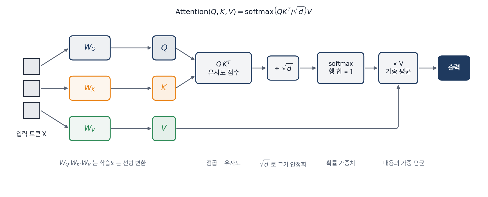
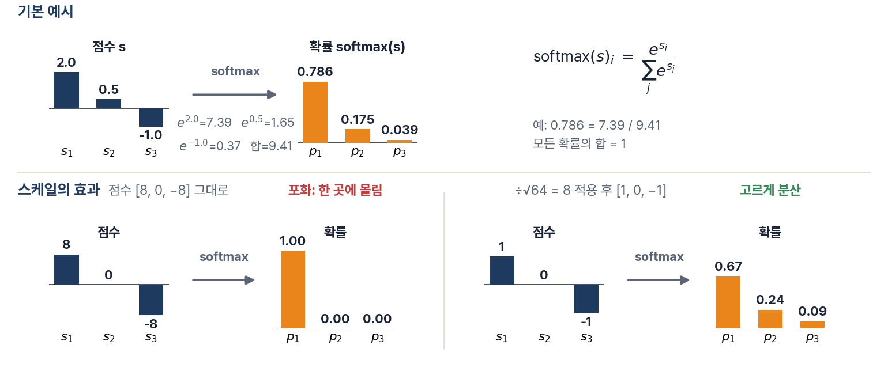
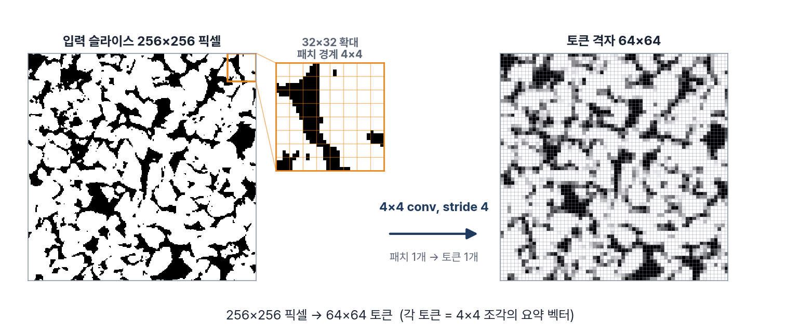
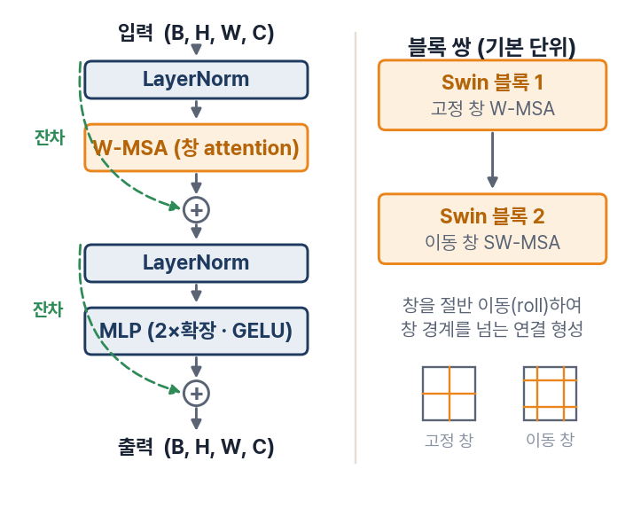
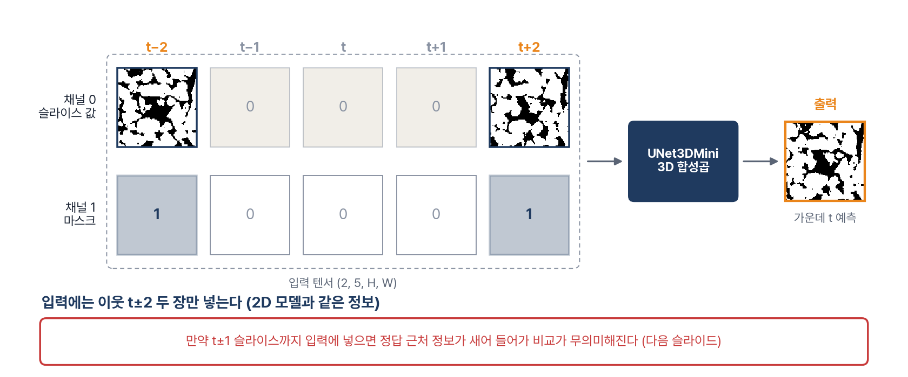

DIGITAL ROCK · 6-WEEK COURSE
DIGITAL ROCK · WEEK 4
다른 아키텍처
Transformer · 3D CNN
Transformer · 3D CNN
같은 문제 · 같은 정보 · 같은 시간 예산.
구조를 바꾸면 무엇이 얻어지고, 무엇이 비싸지는가.
구조를 바꾸면 무엇이 얻어지고, 무엇이 비싸지는가.
attention 원리
Swin · 3D 구조
공정 비교
실습
WEEK 4 · 지난 주까지의 위치
지금까지 구조는 하나, 2D UNet 이었다
W3까지의 개선은 전부 손실과 학습 방법의 개선이었다. 구조(연결 방식)는 바꾼 적이 없다.
W1 · 고전 보간
선형 보간
이웃 두 장의 평균. 학습 없음.
Bentheimer k=2 기준 |Δφ| 11.75%p
Bentheimer k=2 기준 |Δφ| 11.75%p
→
W2 · 딥러닝 입문
2D UNet + L1
이웃 t±k 두 장 → 가운데 t 를 학습.
선형 대비 오차 1/6 수준
선형 대비 오차 1/6 수준
→
W3 · 적대적 학습
+ 판별자 (GAN)
구조는 그대로, 손실을 교체.
회색 번짐 억제, 경계 선명화
회색 번짐 억제, 경계 선명화
이번 주. 손실이 아니라 구조(architecture)를 바꾼다. 합성곱이 아닌 연결 방식 두 가지(창 attention · Swin Transformer 와 3D 합성곱)를 같은 문제에 적용한다.
Digital Rock · W4 다른 아키텍처02 / 44
WEEK 4 · 핵심 질문
구조를 바꾸면 무엇이 얻어지고, 무엇이 비싸지는가
같은 슬라이스 보간 문제를 연결 방식이 다른 세 구조로 푼다.
2D 합성곱 · 지역 연산, 위치가 정하는 고정 가중치
창 attention · 내용(유사도)이 정하는 가중치
3D 합성곱 · 슬라이스 사이(z)까지 함께 합성곱
세 모델의 파라미터는 약 12만 개로 동급이다. 차이가 나면 그것은 크기가 아니라 구조의 차이다.
2D 합성곱 · 지역 연산, 위치가 정하는 고정 가중치
창 attention · 내용(유사도)이 정하는 가중치
3D 합성곱 · 슬라이스 사이(z)까지 함께 합성곱
세 모델의 파라미터는 약 12만 개로 동급이다. 차이가 나면 그것은 크기가 아니라 구조의 차이다.
§1 합성곱의 시야 · 지역성과 수용 영역
§2 attention 원리 · 수식을 숫자로 계산
§3 Swin · 창 분할과 SwinUNetMini
§4 3D 합성곱 · 부피 문맥과 공정한 입력
§5 공정 비교 · 원칙 · 대규모 결과 · trade-off
§6 실습 · 같은 예산으로 세 구조 학습
Digital Rock · W4 다른 아키텍처03 / 44
01
Part 1 · The Local View
합성곱의 시야
각 위치는 주변 3×3 만 본다. 같은 가중치를 모든 위치에 재사용한다. 이 두 선택이 CNN의 강점이자 한계다.
Digital Rock · W404 / 44
§1 · 복습
합성곱: 지역 연산 + 가중치 공유

지역 연산. 출력 한 픽셀은 입력의 주변 3×3 만 본다. 멀리 있는 픽셀은 존재하지 않는 것과 같다.
가중치 공유. 같은 9개 가중치를 전 위치에 재사용한다. 예: conv 16→32채널 = 9×16×32 = 4,608개.
Digital Rock · W4 · §105 / 44
§1 · 시야의 성장
수용 영역: 층을 쌓아야 넓어진다
한 출력 픽셀이 보는 입력 범위(수용 영역)는 3×3 conv 층당 +2. 넓은 시야에는 깊은 네트워크가 필요하다.

왼쪽: 3층 conv 후 출력 1픽셀이 보는 입력 범위 = 7픽셀. 오른쪽: 층수 대비 수용 영역. 풀링(보폭 2배) 삽입 시 성장이 빨라진다.
Digital Rock · W4 · §106 / 44
§1 · 한계
두 가지 한계, 두 가지 대안
한계 1 · 전역 관계의 비용
멀리 보려면 깊이 쌓아야 한다
수용 영역은 층당 +2. 이미지 반대편의 정보는 수십 층을 거쳐야 도달하고, 거치는 동안 희석된다.
한계 2 · 내용 무관 고정 가중치
"비슷한 곳을 골라 보기"가 없다
가중치는 학습 후 고정되고 위치가 정한다. 입력 내용에 따라 참고할 곳을 바꾸는 동작은 구조적으로 불가능하다.
대안 1 · attention (§2–§3)
가중치를 내용의 유사도로 실행 시점마다 계산한다. 한 번의 연산으로 (창 안의) 모든 위치를 본다.
대안 2 · 3D 합성곱 (§4)
시야를 평면 밖으로 넓힌다. 슬라이스 사이(z 방향)의 연속성을 부피 합성곱으로 직접 본다.
Digital Rock · W4 · §107 / 44
§1 · 비교 대상
세 구조, 같은 문제, 같은 크기
입력·출력은 동일: 이웃 t±k 두 장 → 가운데 t 한 장. 다른 것은 내부 연결 방식뿐이다.
UNetMini · W2
2D 합성곱
117,217 파라미터
3레벨 인코더·디코더 + skip.
지역 연산 · 고정 가중치
지역 연산 · 고정 가중치
SwinUNetMini · 신규
창 attention
124,641 파라미터
같은 U-구조, 합성곱 블록 자리에 Swin 블록.
내용 기반 가중치
내용 기반 가중치
UNet3DMini · 신규
3D 합성곱
129,181 파라미터
3×3×3 커널로 슬라이스 사이까지.
부피 문맥
부피 문맥
크기를 맞춘 이유. 파라미터가 다르면 "구조가 좋아서"인지 "커서"인지 구분할 수 없다. 크기를 고정하면 남는 변수는 연결 방식뿐이다. (시간 예산은 §5에서 통제한다)
Digital Rock · W4 · §108 / 44
02
Part 2 · Content-based Weights
Attention 원리
수식은 한 줄이다: $\mathrm{softmax}(QK^{\top}/\sqrt{d})\,V$. 이 한 줄을 기호 하나씩, 그리고 실제 숫자로 계산한다.
Digital Rock · W409 / 44
§2 · 아이디어
내용이 정하는 가중 평균
합성곱: 위치가 정한 고정 이웃을 본다. attention: 내용(유사도)이 정한 가중치로 전체를 본다.

같은 질의 픽셀(주황)에서 합성곱은 고정된 3×3 이웃만 본다(왼쪽). attention은 유사한 구조(공극 경계)로 굵은 연결을 만든다(오른쪽 · 예시용 유사도).
Digital Rock · W4 · §210 / 44
§2 · 수식 해부
Q · K · V: 질의 · 색인 · 내용
attention 정의 · 색은 아래 해설과 대응
$$\mathrm{Attention}(Q,K,V)\;=\;\mathrm{softmax}\!\left(\frac{\textcolor{#1f3a5f}{Q\,K^{\top}}}{\textcolor{#d4760f}{\sqrt{d}}}\right)\textcolor{#2e8b57}{V}$$
Q · K · V 의 출처
같은 입력 $X$ 에서 서로 다른 선형 변환으로 생성:
$Q=XW_Q$, $K=XW_K$, $V=XW_V$.
학습되는 것은 $W_Q, W_K, W_V$ 다.
$Q=XW_Q$, $K=XW_K$, $V=XW_V$.
학습되는 것은 $W_Q, W_K, W_V$ 다.
$Q\,K^{\top}$ · 유사도 점수
모든 토큰 쌍의 점곱. "나의 질의(Q)와 너의 색인(K)이 얼마나 맞는가"를 잰다. 결과는 토큰수×토큰수 행렬.
÷√d · 크기 안정화
차원 d 가 크면 점곱이 커져 softmax 가 포화된다. √d 로 나눠 분포를 살린다. (다음 장)
softmax → ×V · 가중 평균
행마다 합=1 가중치를 만들고, 그 가중치로 내용(V)의 가중 평균을 낸다. 이것이 새 표현이다.

Digital Rock · W4 · §211 / 44
§2 · 스케일
√d 나눗셈: softmax 포화를 막는 장치
왜 점곱이 커지는가
성분이 평균 0·분산 1인 두 벡터 $q, k$ 의 점곱 $q\cdot k=\sum_{i=1}^{d} q_i k_i$ 는 항 $d$ 개의 합이라 분산이 $d$ 에 비례한다. 표준편차는 $\sqrt{d}$.
$d=64$ 이면 점수가 ±8 수준. softmax 는 지수 함수라 점수 8은 가중치 1.0 독점을 뜻한다.
$d=64$ 이면 점수가 ±8 수준. softmax 는 지수 함수라 점수 8은 가중치 1.0 독점을 뜻한다.
수치 예시 · d=64
점수 [8, 0, −8]
→ softmax = [1.00, 0.00, 0.00] 포화
÷√64 → [1, 0, −1]
→ softmax = [0.67, 0.24, 0.09]
→ softmax = [1.00, 0.00, 0.00] 포화
÷√64 → [1, 0, −1]
→ softmax = [0.67, 0.24, 0.09]
포화가 풀리면 여러 토큰을 함께 보는 분포가 유지되고, 기울기도 살아 있다.
기억할 것. ÷√d 는 수학적 장식이 아니라 학습이 되게 만드는 안정화 장치다. W3의 warmup·spectral norm처럼, 안정화 장치는 항상 "왜 필요한가"와 함께 기억한다.
Digital Rock · W4 · §212 / 44
§2 · softmax
softmax: 점수를 합=1 가중치로
$\mathrm{softmax}(s_i)=e^{s_i}\big/\sum_j e^{s_j}$. 지수를 취해 전체 합으로 나눈다. 큰 점수는 크게, 그러나 모두 합하면 1.

위: [2.0, 0.5, −1.0] → e 지수 [7.39, 1.65, 0.37], 합 9.41 → [0.786, 0.175, 0.039]. 아래: 점수가 크면 포화, ÷√d 후 분포 회복.
Digital Rock · W4 · §213 / 44
§2 · 전 과정 계산
attention 수치 예시: 토큰 3개로 전 과정

3행 읽기. x₃=[1,1] 은 둘 다와 비슷 → 가중치 [0.25, 0.25, 0.50] 로 분산 → 출력 [5.0, 5.0] = 내용의 중간값.
확인. 각 행의 가중치 합 = 1. 출력은 항상 V 행들의 볼록 결합(가중 평균)이다. 없는 값을 만들어내지 않는다.
실습 연결. 노트북 §2 에서 같은 숫자를 직접 실행하고, §2 Try-it 에서 √d 를 빼고 차이를 관찰한다.
Digital Rock · W4 · §214 / 44
§2 · multi-head
multi-head: 여러 관점의 유사도를 병렬로
채널을 head 로 나눠 서로 다른 유사도 기준을 병렬 학습한다. SwinUNetMini: 채널 32 = 4 head × 8차원.

head 마다 별도의 $W_Q, W_K, W_V$ 를 두어 같은 토큰들에 대해 다른 가중치 분포를 만든다. 출력은 이어 붙여(concat) 선형 변환.
Digital Rock · W4 · §215 / 44
§2 · 비용
비용은 N²: 전부 볼 수는 없다
유사도 행렬은 토큰수×토큰수. N=65,536(픽셀 전부)이면 4.3×10⁹ 쌍. 그대로는 불가능하다.

해법 미리보기: ① 패치 임베딩(픽셀→토큰 요약, ÷256) ② 창 분할(창 안에서만 attention, ÷64). 둘을 합치면 §3의 Swin 이 된다.
Digital Rock · W4 · §216 / 44
03
Part 3 · Windowed Attention
Swin Transformer
패치 임베딩 → 창 분할 → 창 이동. 세 가지 설계로 attention 을 이미지 크기에서 감당 가능하게 만든다.
Digital Rock · W417 / 44
§3 · 1단계
패치 임베딩: 픽셀을 토큰으로
4×4 픽셀 → 토큰 1개 (conv stride 4). 256² 픽셀이 64×64 = 4,096 토큰이 된다 (쌍 수 ÷256).

토큰 = 4×4 조각의 요약 벡터(채널 32). 세부 픽셀 정보 일부를 내주고 토큰 수를 얻는 거래다.
Digital Rock · W4 · §318 / 44
§3 · 2단계
창 분할: attention 을 창 안에 가둔다
8×8 창 64개 · 창 안에서만 attention → 64 × 64² = 262,144 쌍 (전체 대비 ÷64). 대가: 창 밖과 연결 없음.

한 창(강조)의 토큰 64개끼리만 유사도를 계산한다. 오른쪽: 그 창의 64×64 attention 행렬 (예시용 유사도 기반 가중치).
Digital Rock · W4 · §319 / 44
§3 · 3단계
창 이동: 경계를 넘는 연결
다음 블록에서 창을 절반(4토큰) 이동 → 경계에 걸렸던 이웃이 같은 창에 들어온다. 구현은 torch.roll 한 줄.

고정 창(W-MSA)과 이동 창(SW-MSA)을 번갈아 쌓으면 창 경계를 넘어 정보가 전달된다.
Digital Rock · W4 · §320 / 44
§3 · 블록
Swin 블록: LN → 창 attention → MLP

잔차 연결 ×2
attention 결과와 MLP 결과를 입력에 더한다. 블록이 "수정량"만 학습하므로 깊게 쌓아도 안정적이다.
LayerNorm (사전 정규화)
각 연산 앞에서 토큰 벡터를 정규화한다. √d 나눗셈과 같은 계열의 안정화 장치다.
블록 쌍 = 고정 창 + 이동 창
W-MSA 블록 뒤에 SW-MSA 블록. 항상 쌍으로 배치해 창 경계 연결을 보장한다.
Digital Rock · W4 · §321 / 44
§3 · 조립 완료
SwinUNetMini: U-구조에 Swin 블록

설계 디테일이 성패를 가른 사례. 최상단(full-res) skip 이 없던 첫 버전은 90초 학습에서 "전부 solid" 자명해에 갇혔다(|Δφ| ≈ 공극률 26.7%p). 픽셀 세부를 1/4 해상도 토큰에서 되만들어야 했기 때문이다. stem skip 추가 후 |Δφ| 2%p 수준으로 정상 학습됐다. 실습 §3에서 확인한다.
Digital Rock · W4 · §322 / 44
04
Part 4 · Volumetric Context
3D 합성곱
공극은 z 방향으로 이어진 3차원 구조다. 3×3×3 커널은 그 연속성을 직접 본다. 문제는 무엇을 입력하는가다.
Digital Rock · W423 / 44
§4 · 연산
2D vs 3D: 커널이 한 차원 늘어난다
3×3 = 9 가중치 → 3×3×3 = 27 가중치 (같은 채널 기준 파라미터 3배). 연산은 깊이 방향 슬라이딩만큼 추가.

예: Conv2d(16→32) 4,608개 vs Conv3d(16→32) 13,824개. 시야(z 방향)를 얻는 대신 크기·연산을 낸다.
Digital Rock · W4 · §424 / 44
§4 · 동기
공극은 z 방향으로 이어진 구조다

같은 공극(주황 원)이 z=126→130에서 연속적으로 변한다. 2D 모델은 이 연속성을 이웃 두 장으로만 추정하고, 3D 커널은 직접 본다.
Digital Rock · W4 · §425 / 44
§4 · 실험 설계
공정한 입력: 2D와 같은 정보만 넣는다
입력 부피(깊이 2k+1)에는 이웃 t±k 두 장만 채운다. 나머지 면은 0 + 채움 마스크 채널. 3D 라는 형식만 다를 뿐 정보는 2D와 동일하다.

k=2 예시. 채널 0: 이웃 슬라이스 2면 + 빈 면 3면 · 채널 1: 채움 위치 마스크 [1,0,0,0,1]. 출력은 가운데 t 한 장.
Digital Rock · W4 · §426 / 44
§4 · 경고 사례
정보 누출: 잘못된 입력이 만드는 착시

읽는 법. +0.13 은 구조의 성능이 아니라 입력에 새어 들어간 정답 정보다. 실전 배포 상황에는 t±1 이 존재하지 않으므로 누출 설계의 숫자는 재현되지 않는다. 지표를 보기 전에 입력에 무엇이 들어갔는지 먼저 확인한다.
Digital Rock · W4 · §427 / 44
§4 · 조립 완료
UNet3DMini: 깊이를 유지하는 3D U-구조

깊이 방향 풀링 없음. pool (1,2,2). 깊이 5를 유지해야 3×3×3 커널이 이웃 정보를 가운데로 층마다 한 칸씩 전파한다.
출력 = 가운데 면. 부피를 처리하고 예측 대상인 가운데 슬라이스 한 장만 읽는다 (loss 도 그 면에만).
비용. 129,181 파라미터로 동급이지만 한 스텝 연산은 세 모델 중 최대다. 같은 시간 예산에서 학습량이 가장 적다 (§5).
Digital Rock · W4 · §428 / 44
05
Part 5 · Fair Comparison
공정 비교
같은 데이터 · 같은 입력 정보 · 같은 시간 예산. 세 가지를 통제해야 "구조의 효과"만 남는다.
Digital Rock · W429 / 44
§5 · 원칙
통제할 것 세 가지, 믿지 말 것 한 가지
원칙 1 · 같은 데이터
같은 volume, 같은 (t−k, t, t+k) triplet, 같은 평가 슬라이스. 데이터가 다르면 비교가 아니라 별개의 실험이다.
원칙 2 · 같은 입력 정보
모든 모델의 입력은 이웃 t±k 두 장뿐. 형식(2D/3D)은 달라도 정보량은 동일하다 (§4 공정 입력·누출 점검).
원칙 3 · 같은 시간 예산
wall-clock 예산 고정. 빠른 구조는 그 시간에 epoch 을 더 돈다. 속도도 구조의 실력이므로 예산으로 비교한다.
믿지 말 것 · 파라미터 수
파라미터 수는 성능의 대리 지표가 아니다. §5 결과에서 1.1M 짜리 attention 모델이 24.5M 모델에 근접하는 사례를 본다. 크기·시간·정확도는 따로 읽어야 하는 세 축이다.
Digital Rock · W4 · §530 / 44
§5 · 대규모 참고 실험
설정: 원칙 3개를 대규모에 적용
| 항목 | 설정 | 실습(§6)과의 관계 |
|---|---|---|
| 데이터 | 사암 micro-CT 1000³ voxel | 실습은 같은 문제의 256³ 축소판 |
| 입력 정보 | 모든 모델 동일 (이웃 슬라이스만 · 누출 없음) | 원칙 2 · §4 공정 입력 |
| 시간 예산 | GPU 1시간 내외로 통일 (wall-clock) | 원칙 3 · 실습은 CPU 90초 |
| 평가 | 같은 테스트 영역 · 같은 지표 (SSIM · |Δφ|) | 실습과 같은 지표 |
| 모델 크기 | 구조별 표준 크기 (1.1M ~ 24.5M · 파라미터 상이) | 실습은 크기를 12만으로 통일 |
읽기 전 주의. 이 표의 숫자는 위 설정에서만 유효하다. 프로토콜(데이터·예산·평가)이 다른 숫자와 섞어 비교하면 안 된다. W3의 "정직한 평가"와 같은 원칙이다.
Digital Rock · W4 · §531 / 44
§5 · 결과
대규모 결과: 순위와 격차
| 모델 (구조) | 파라미터 | SSIM ↑ | |Δφ| (%p) ↓ | 비고 |
|---|---|---|---|---|
| 2D UNet · L1 (W2 구조의 대형판) | 24.5M | 0.932 | 0.27 | 단일 구조 중 최고 |
| SwinUNet · 창 attention | 1.1M | 0.926 | 0.34 | 파라미터 1/22 로 근접 |
| 3D UNet · 부피 합성곱 (공정 입력) | 3.15M | 0.914 | 0.40 | 파라미터 동급 대형판(22.4M)도 유사 |
| 2D UNet + 3축 융합 (W5 예고) | 24.5M | 0.935 | 0.12 | 구조 교체 없이 사용법 개선 |
순위. 이 문제·이 예산에서는 2D 합성곱 > attention > 3D 합성곱. 미니 실습(§6)에서도 같은 경향이 나온다.
파라미터 함정 확인. 1.1M SwinUNet ≈ 24.5M UNet. 크기가 아니라 구조와 데이터의 궁합이 성능을 정한다.
다음 주 훅. 최고 성적은 새 구조가 아니라 같은 구조의 다른 사용법(3축 융합)이다. W5 주제다.
Digital Rock · W4 · §532 / 44
§5 · trade-off
크기 대 성능: 축을 나눠 읽는다

왼쪽: |Δφ| (낮을수록 좋음) · 오른쪽: SSIM (높을수록 좋음). SwinUNet 은 크기 최소·성능 중상위로 파라미터 효율 축의 강자다.
Digital Rock · W4 · §533 / 44
§5 · 속도
속도와 연산량: 3D의 숨은 비용

파라미터 동급(24.5M vs 22.4M)이어도 3D 는 슬라이스당 약 9배 느리다 (연산량 비 ×9.5와 일치). 속도는 파라미터가 아니라 연산 구조가 정한다.
Digital Rock · W4 · §534 / 44
§5 · 해석
왜 이 순위인가: 귀납 편향과 비용
2D 합성곱이 강한 이유
암석 단면은 지역적 연속성이 강한 데이터다. "가까운 픽셀이 관련 깊다"는 합성곱의 내장 가정(귀납 편향)이 문제와 정확히 맞는다. 가정이 맞으면 적은 데이터·시간으로 빨리 배운다.
attention 의 조건
가정이 약한 만큼 유연하지만 배가 고프다. 데이터·시간이 더 필요하다. 파라미터 효율은 최고이므로, 규모가 커지거나 전역 관계가 중요한 문제로 갈수록 유리해진다.
3D 의 대차대조
부피 문맥은 실제 이득이지만, 이 문제에서는 연산 비용 증가가 이득을 상회했다. 같은 예산에서 학습량이 줄고, 추론도 ~9배 느리다. 문맥이 더 결정적인 문제라면 결론이 달라질 수 있다.
이번 주의 결론. "최고의 구조"는 없다. 문제·데이터·예산이 정하는 최적 구조가 있을 뿐이다. 비교는 반드시 세 원칙 위에서, 지표는 축(정확도·크기·속도)을 나눠 읽는다.
Digital Rock · W4 · §535 / 44
06
Part 6 · Hands-on
실습
benchmark_models 한 줄로 세 구조를 같은 예산에서 학습하고, attention 수식을 직접 계산한다.
Digital Rock · W436 / 44
§6 · 도구
benchmark_models: 공정 비교 한 줄
# 세 구조 · 같은 데이터 · 같은 정보 · 같은 90초
results = benchmark_models(vol, k=2, budget_s=90,
device=DEVICE, seed=0)
# results[이름] = params · epochs · |Δφ| · SSIM
# · history(시간축 손실) · recon
# 다른 모델·크기로 바꿔서도 실행 가능
benchmark_models(vol, k=2, budget_s=90,
models={'SwinUNet w=4': SwinUNetMini(window_size=4)})
results = benchmark_models(vol, k=2, budget_s=90,
device=DEVICE, seed=0)
# results[이름] = params · epochs · |Δφ| · SSIM
# · history(시간축 손실) · recon
# 다른 모델·크기로 바꿔서도 실행 가능
benchmark_models(vol, k=2, budget_s=90,
models={'SwinUNet w=4': SwinUNetMini(window_size=4)})
내부 동작 1. 모델마다 시드 재고정 → 같은 데이터 순서.
내부 동작 2. 3D 모델은 자동으로 공정 입력(Slice3DDataset) 사용.
내부 동작 3. wall-clock 이 예산 도달 시 즉시 중단 → epoch 수는 모델마다 다른 것이 정상.
내부 동작 4. optimizer 는 구조별 표준(합성곱 Adam · transformer AdamW+clip). 같은 lr 이 모두에게 안정적이지 않다.
Digital Rock · W4 · §637 / 44
§6 · 노트북
W4_architectures.ipynb 흐름
§1 데이터 로드 + 선형 baseline (기준선)
§2 attention 수치 계산 · √d 포화 · 창 분할 시각화
§3 SwinUNetMini 구축 · attention map 꺼내 보기
§4 UNet3DMini 구축 · 공정 입력 눈으로 확인
§5 benchmark_models 공정 비교 + 시간축 학습 곡선
§6 복원 비교 (확대 포함) + trade-off 정리
§7 심화: 창 크기 4 vs 8 같은 예산 재실험
새 함수 (model_utils.py)
| window_partition | 토큰 격자 → 창 단위 분할 |
| WindowAttentionMini | 창 attention (map 반환 가능) |
| SwinBlockMini | LN→W-MSA→MLP + 잔차 |
| SwinUNetMini | 창 attention U-구조 (~125K) |
| UNet3DMini | 3D 합성곱 U-구조 (~129K) |
| Slice3DDataset | 공정 입력 3D 데이터셋 |
| evaluate_model_3d | 3D 평가 (지표는 2D와 동일) |
| benchmark_models | 공정 비교 루프 |
Digital Rock · W4 · §638 / 44
§6 · 실측
실습 결과: 90초 공정 비교 (실행 예시)

Bentheimer 256³ · k=2 · CPU 90초/모델 · seed 0 의 한 실행. 선형 11.75%p → 딥러닝 3종 1.94~2.37%p. 확대: 선형은 얇은 목이 끊기고, 학습 모델은 유지한다. (예산 기반 학습이라 실행마다 수치가 조금 달라진다)
Digital Rock · W4 · §639 / 44
§6 · 실측
시간축 학습 곡선: 속도가 학습량을 정한다

점 간격 = epoch 비용. 같은 90초에 75 vs 38 vs 13 epoch. 구조가 학습량을 정한다.
3D 의 특징. epoch 당 손실 하강 폭은 가장 큼 (부피 문맥의 이득). 그러나 스텝이 비싸 총량에서 밀린다.
Try-it. budget_s 를 30·90·180 으로 바꾸면 느린 구조가 따라붙는지 확인할 수 있다 (탐구 과제 1).
Digital Rock · W4 · §640 / 44
§6 · 과제
탐구 과제 (핸드아웃 §5)
과제 1 · 필수
시간 예산과 순위
budget_s = 30 / 90 / 180 반복 → 예산에 따라 세 구조의 지표·순위가 어떻게 변하는가. 느린 구조(3D)가 이득을 더 보는가.
과제 2 · 필수
창 크기 trade-off
window_size = 4 / 8 / 16 에서 epoch 수·|Δφ|·SSIM 비교 → "보는 범위 ↔ 계산 비용" 관점으로 해석.
과제 3 · 선택
파라미터-성능 곡선
세 구조의 base 를 각각 바꿔 "파라미터 vs 지표" 곡선을 그린다 → 같은 크기에서 구조 간 격차가 유지되는가.
과제 4 · 선택 · 심화
정보 누출 실험
Slice3DDataset 을 복사해 t±1 까지 채우는 잘못된 버전을 만들어 학습 → 지표가 얼마나 부풀는지 측정하고, 왜 실력이 아닌지 설명.
Digital Rock · W4 · §641 / 44
§6 · 자기 점검
여섯 질문에 답할 수 있는가
Q1 합성곱과 attention 의 가중치는 각각 무엇이 정하는가? 한 문장으로.
Q2 Q·K·V 의 역할을 나누어 설명하고, $\mathrm{softmax}(QK^{\top}/\sqrt{d})V$ 를 말로 풀어 보라.
Q3 $\sqrt{d}$ 로 나누지 않으면 무엇이 잘못되는가? "포화"와 "기울기"로 답하라.
Q4 창 분할이 줄이는 것과 잃는 것은? 창 이동은 무엇을 복구하는가?
Q5 3D 모델 입력에 t±1 슬라이스를 넣으면 안 되는 이유는? SSIM 0.953 vs 0.823 사례로.
Q6 "파라미터 수가 비슷하니 공정한 비교다"라는 주장의 빈틈 두 가지는?
Digital Rock · W4 · §642 / 44
WEEK 4 · 핵심 요약
구조는 거래다: 얻는 것과 내주는 것
| 구조 | 가중치·시야 | 얻는 것 | 내주는 것 |
|---|---|---|---|
| 2D UNet (W2) | 위치 기반 고정 · 지역 | 적은 데이터·시간에 안정 (귀납 편향 적합) | 전역 관계는 깊이로만 |
| SwinUNet | 내용 기반 동적 · 창 단위 | 파라미터 효율 · 유연한 연결 | 데이터·시간 요구량 ↑ |
| UNet3D | 위치 기반 고정 · 부피 | z 연속성을 연산 단위에서 직접 | 스텝 비용 ↑ → 같은 예산 학습량 ↓ |
공정 비교 3원칙. 같은 데이터 · 같은 입력 정보 · 같은 시간 예산. 하나라도 무너지면 숫자는 구조가 아니라 설계 차이를 잰다.
지표 읽기. 정확도·크기·속도는 서로 다른 세 축이다. 파라미터 수와 높은 지표는 모두 그 자체로는 증거가 아니다 (누출 점검 先).
Digital Rock · W443 / 44
WEEK 5 · 예고
다음 주: 구조를 바꾸지 않고 이기는 법
오늘의 복선. §5 결과 표의 1위는 새 구조가 아니라 같은 2D UNet + 3축 융합(SSIM 0.935 · |Δφ| 0.12%p)이었다. 구조 교체보다 사용 방법의 개선이 더 컸다.
W5 주제 1
3축 융합 (tri-axis)
x·y·z 세 방향의 예측을 융합해 단일 축의 한계를 보완한다.
W5 주제 2
multi-k 학습
여러 이웃 거리를 함께 학습해 일반화를 넓힌다.
W5 주제 3
증강 · 후처리
데이터 증강과 형태학적 후처리의 효과를 정량 평가한다.
준비. 오늘 노트북의 results 표(특히 2D UNet 의 |Δφ|·SSIM)를 기록해 둘 것. W5 에서 개선 폭의 기준선이 된다.
Digital Rock · W444 / 44